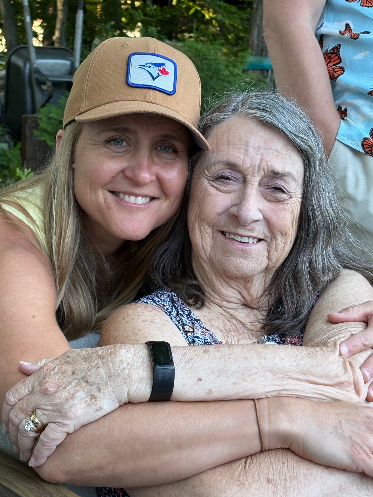

Seniors & Family
A strong community is one where every generation has the opportunity to thrive.
The Township of Langley should be a place where people can build a life from childhood through retirement. Families deserve safe neighbourhoods, quality parks and recreation, and opportunities for children to learn, play, and grow. Seniors deserve to remain active, connected, and able to age in the community they helped build.
I believe municipal government plays an important role in creating communities that bring generations together. Thoughtful planning means investing in parks, recreation, accessible public spaces, transportation, and community programs that support people at every stage of life. When we build communities where children flourish and seniors remain connected, everyone benefits.
When decisions affecting seniors and families come before Council, I’ll ask:
- Does this improve quality of life for residents of all ages?
- Are we creating opportunities for families to connect and children to thrive?
- Does this help seniors remain active, independent, and engaged in our community?
- Have we considered accessibility and inclusion so everyone can participate?
- Will this strengthen our community for future generations?
I believe one of the greatest measures of a community is how well it supports people throughout every stage of life. By planning for children, families, seniors, and everyone in between, we create a Township where people don’t just live, they belong.
